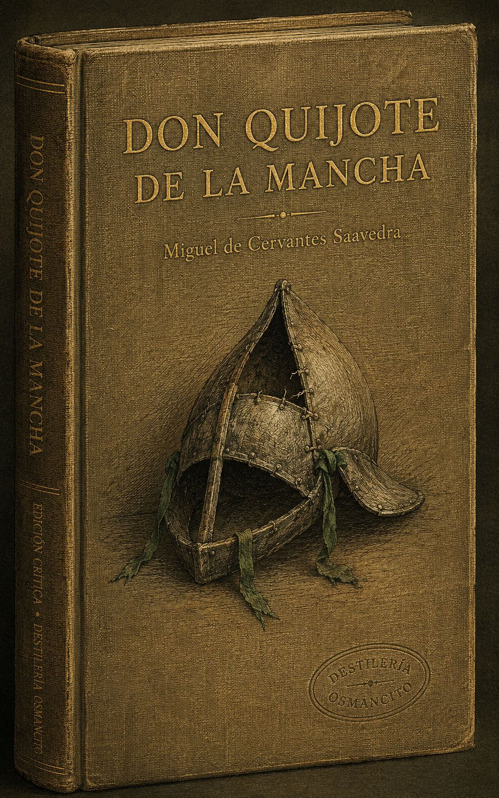
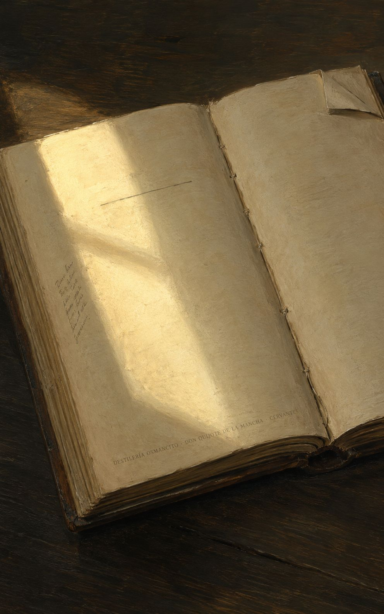
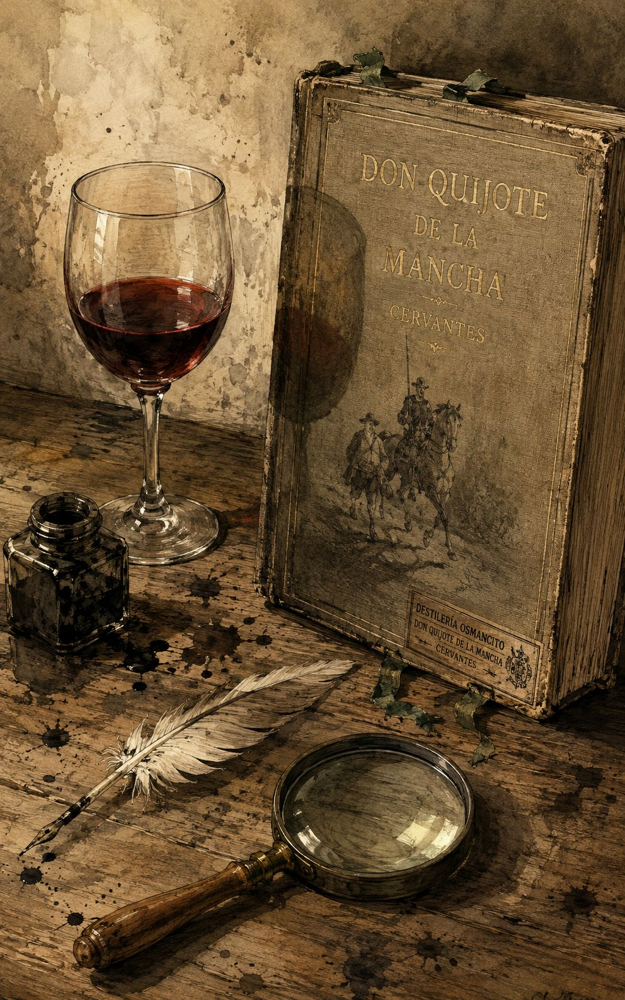
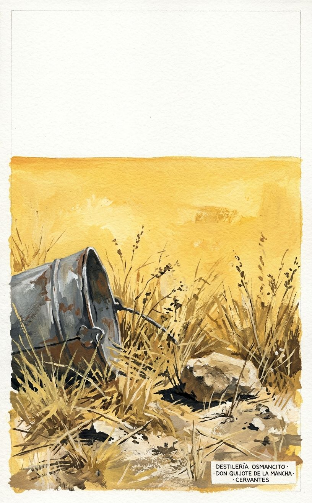
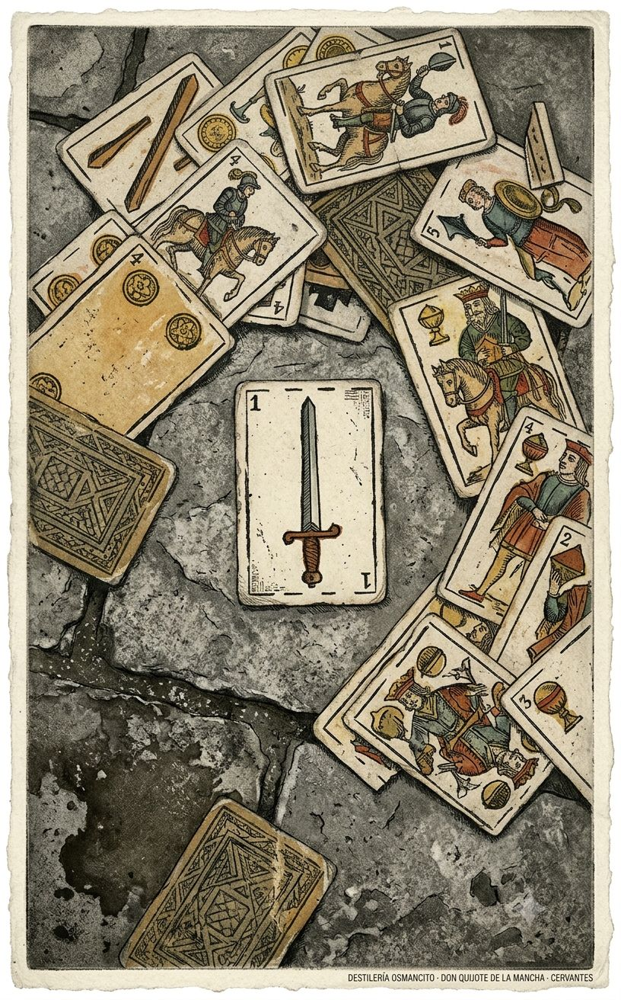
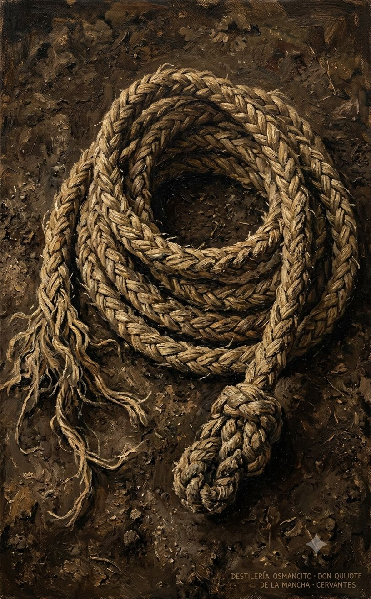
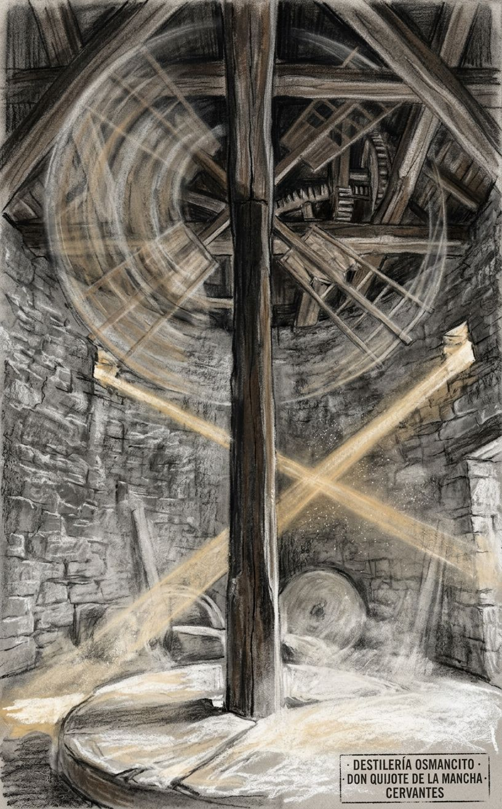

Un hombre decide volverse loco a propósito —o así lo declara el libro— y durante 126 capítulos nadie puede decidir si eso es tragedia o comedia, y el libro tampoco. Lo que nadie esperaba: que el escudero, el hombre gordo que solo quería una ínsula, resultara ser el personaje más sabio de la historia de la literatura española. Cervantes escribió un libro para matar los libros de caballería y produjo el único libro que no ha muerto.
Un mamotreto de casi cuatrocientas mil palabras que llegó al mundo en dos entregas separadas por diez años, impreso primero en Valladolid con licencia real, encuadernado en papel que no auguraba eternidad, y que desde entonces no ha dejado de circular.
Este corpus no es un libro sobre la locura: es un libro que practica la locura como método. Llega con el peso específico de los objetos que han sido tocados por demasiadas manos —desgastado en los bordes, familiar hasta la invisibilidad— y sin embargo abre en una resistencia extraña: no se deja resumir porque no es una historia, es una máquina. Nombrar lo que es el Quijote es distinto de contar lo que dice el Quijote. Lo que dice se puede contar en tres oraciones. Lo que es ha ocupado cuatro siglos de desacuerdo.
Título — El ingenioso hidalgo don Quijote de la Mancha (Parte I, 1605) / Segunda parte del ingenioso caballero don Quijote de la Mancha (Parte II, 1615)
Autor — Miguel de Cervantes Saavedra
Año — 1605 (Parte I) · 1615 (Parte II)
Género — Novela. Específicamente: parodia de los libros de caballería que excede y cancela su propio género de origen.
Extensión estimada — 387,000 palabras · 1,548 páginas aproximadas (a 250 palabras por página) · 126 capítulos: 52 en la Parte I, 74 en la Parte II, más preliminares legales, dedicatorias y prólogos en ambas partes.
Idioma original — Español (castellano del siglo XVII, con arcaísmos deliberados en el habla de don Quijote)
Palabra más frecuente con contenido — Quijote (2,245 ocurrencias). Confirma lo que el corpus declara ser: una historia centrada en su protagonista. Pero Sancho aparece 2,174 veces —a 71 ocurrencias de distancia—, lo que el corpus no declara explícitamente pero practica de forma sostenida: esto es tan novela de Sancho como de don Quijote. La tercera palabra de contenido más frecuente es caballero (677), que es el concepto que el corpus se propone destruir y que no puede dejar de nombrar.
Alonso Quijano, hidalgo manchego de unos cincuenta años, enloquece de leer libros de caballería y decide convertirse en caballero andante bajo el nombre de don Quijote de la Mancha. Realiza tres salidas al mundo: en la primera sale solo, es apaleado y regresa; en la segunda lleva como escudero a Sancho Panza, labrador vecino al que promete el gobierno de una ínsula, y recorre La Mancha y Cataluña encontrando aventuras que solo él percibe como tales; en la tercera —que es toda la Parte II— enfrenta un mundo que ya lo conoce porque ha leído la Parte I, culminando en la derrota definitiva a manos del Caballero de la Blanca Luna, la vuelta al pueblo, la recuperación del juicio y la muerte como Alonso Quijano el Bueno. La Parte II incluye además el gobierno efectivo de Sancho Panza en la ínsula Barataria, donde el escudero demuestra una sabiduría práctica que su señor nunca alcanzó.
Don Quijote / Alonso Quijano — El protagonista: hidalgo que se vuelve caballero andante por lectura excesiva, muere recuperado del delirio.
Sancho Panza — El escudero: labrador analfabeto, pragmático, cuerdo, lleno de refranes, que termina siendo el personaje más complejo de la novela.
Dulcinea del Toboso / Aldonza Lorenzo — La dama imaginada: nunca aparece como personaje activo; existe como proyección de don Quijote y como problema metafísico.
Cide Hamete Benengeli — El narrador fingido: historiador árabe cuyo manuscrito encontrado sirve de fuente declarada del relato, dispositivo metaficcional central.
Rocinante — El caballo: también figura, también personaje menor, también símbolo del estado real de las cosas bajo la capa de las ilusiones.
El Bachiller Sansón Carrasco — Personaje de la Parte II: joven letrado que finge ser caballero andante para engañar a don Quijote y devolverlo al pueblo.
Los Duques — Pareja aristocrática de la Parte II que convierte las aventuras de don Quijote en entretenimiento privado, introduciendo la crueldad como elemento narrativo.
Lo que el corpus produjo antes de ser pensado: un peso extraño, casi gravitacional, que no es el peso de la tragedia ni el de la comedia sino el de algo que no cabe en ninguna de las dos. El libro es de una alegría feroz y de una melancolía igualmente feroz, y las dos no se turnan sino que ocurren al mismo tiempo, en la misma página, a veces en la misma frase. Eso es lo que se siente antes de entenderlo: que algo aquí duele y hace reír con el mismo gesto, y que ese doble movimiento no tiene nombre todavía, o tiene el nombre de este libro.
La cordura como pérdida. Don Quijote muere cuerdo. Eso debería ser un final feliz. No lo es. El libro trabaja durante 126 capítulos la pregunta de si el delirio que permite vivir con dignidad es preferible a la lucidez que devuelve al mundo tal como es. La respuesta que da el último capítulo es deliberadamente incómoda: recuperar el juicio se parece demasiado a morirse.
El amo que no sabe y el escudero que sabe sin saberlo. Don Quijote es letrado, ha leído todo, cita a los clásicos, habla en arcaísmos deliberados. Sancho es analfabeto, mezcla refranes, no sabe firmar. Y sin embargo Sancho gobierna con sabiduría natural lo que don Quijote nunca podría gobernar. El libro sostiene esta inversión sin resolverla: no celebra la ignorancia ni condena la erudición, simplemente muestra que el conocimiento libresco y el conocimiento del mundo son dos cosas que rara vez habitan el mismo hombre.
La ficción como realidad operativa. Don Quijote no confunde la ficción con la realidad por error: la prefiere. Y el libro, mediante el dispositivo de Cide Hamete Benengeli, hace exactamente lo mismo —prefiere la ficción, la exhibe como tal, y sin embargo opera sobre el lector con la misma fuerza que operaría la realidad. El Quijote es un libro que habla de cómo los libros dañan a las personas mientras hace exactamente lo que critica: enganchar al lector en una ilusión que le importa más que la verdad.
El punto de partida. Alonso Quijano, hidalgo pobre de un lugar de la Mancha cuyo nombre el narrador dice no querer recordar, ha perdido el juicio de tanto leer libros de caballerías. Vende tierras para comprar más libros, no duerme, y termina convencido de que todo lo que en ellos se cuenta —encantamientos, gigantes, batallas, amores corteses— es historia verdadera. Decide resucitar la orden de la caballería andante: él mismo será caballero, remediará agravios, y con ello ganará fama eterna. Se rebautiza don Quijote de la Mancha, arma caballero a su rocín flaco (Rocinante) con un nombre sonoro, y elige como dama a una moza labradora de un pueblo cercano, el Toboso, a quien nunca ha cortejado y a quien nombra Dulcinea del Toboso. Con esto queda fundado el armazón de toda la novela: un hombre cuerdo en todo menos en una idea fija, que interpreta el mundo a través de un código literario obsoleto y lo impone sobre la realidad que encuentra.
Primera salida (solo). Sale una madrugada de julio sin decírselo a nadie. Llega a una venta que su imaginación transforma en castillo; pide ser armado caballero al ventero, a quien toma por el alcaide del castillo. Vela sus armas en el patio, hiere a dos arrieros que intentan mover sus armas del pilar, y el ventero —para deshacerse de él cuanto antes— improvisa una ceremonia burlesca de investidura. Ya “armado caballero”, en el camino de regreso encuentra a un labrador azotando a un mozo, Andrés; don Quijote interviene, obliga al amo a prometer que dejará de azotarlo y pagará el salario debido, y se marcha convencido de haber hecho justicia (en realidad, apenas se aleja, el labrador redobla el castigo). Poco después, don Quijote topa con unos mercaderes toledanos, exige que confiesen que Dulcinea es la dama más hermosa del mundo sin haberla visto; ante la burla de uno de ellos, ataca y cae del caballo, quedando malherido en el suelo. Un vecino de su lugar, Pedro Alonso, lo encuentra y lo lleva de vuelta a casa.
El escrutinio de la librería. Mientras don Quijote yace en cama, el cura Pero Pérez y el barbero maese Nicolás, con la sobrina y el ama, examinan su biblioteca para quemar los libros culpables de su locura. Se salvan pocos (el Amadís de Gaula, algunos otros por juicio del cura), y la mayoría es arrojada al fuego; tapian después la puerta de la librería y le dicen a don Quijote, cuando despierta, que un encantador se llevó los libros y hasta el aposento, para no herirlo con la verdad de la quema. Este episodio establece el tono metaficcional del libro entero: los personajes discuten con criterio literario cuáles novelas de caballerías tienen mérito y cuáles son disparate, un juicio crítico que el propio Cervantes ejerce sobre el género que está parodiando.
Segunda salida: entra Sancho Panza. Don Quijote convence a un vecino labrador, Sancho Panza, hombre sencillo y pobre, de que sea su escudero, prometiéndole el gobierno de una ínsula como recompensa. Salen juntos, de noche y en secreto, y con esta pareja se instala la estructura definitiva de la novela: amo idealista y loco, criado realista y crédulo a medias, en diálogo constante.
Los molinos de viento. El episodio más emblemático: don Quijote ve treinta o cuarenta molinos de viento en un campo y los toma por gigantes descomunales; pese a las advertencias de Sancho, los embiste con la lanza en ristre. Un aspa lo derriba a él y al caballo, dejándolo maltrecho; explica luego que un encantador, su enemigo Frestón, transformó a los gigantes en molinos para quitarle la gloria de la victoria. Este episodio fija el mecanismo interpretativo que se repetirá durante toda la obra: la realidad ofrece un dato neutro (molinos, ventas, rebaños, bacías) y don Quijote lo reinterpreta forzosamente según la lógica caballeresca, atribuyendo la discrepancia a la magia de encantadores hostiles cuando la realidad lo contradice.
El vizcaíno. Viajan y encuentran a unas damas vizcaínas en un coche escoltadas por un vizcaíno; don Quijote, creyendo que las damas van cautivas, exige que se detengan y se enzarza en una pelea singular con el escudero vizcaíno, espadas en alto, en una escena que el narrador corta abruptamente diciendo que la fuente original (un manuscrito hallado en Toledo, escrito por un historiador arábigo llamado Cide Hamete Benengeli) se interrumpe ahí. Este es el primer golpe metaficcional fuerte del libro: el narrador revela que la “verdadera historia” de don Quijote proviene de una fuente encontrada y traducida, y que él mismo es apenas editor de ese material, no testigo directo. La pelea se resuelve luego a favor de don Quijote.
Los yangüeses y la venta-castillo. Sancho y don Quijote son apaleados por unos arrieros yangüeses cuando Rocinante intenta cortejar a sus yeguas. Llegan malheridos a una venta que don Quijote, fiel a su delirio, cree castillo; ahí Maritornes, una moza asturiana, tiene una cita nocturna con un arriero que se cruza cómicamente con la cama de don Quijote, produciendo una pelea a oscuras y una manta en la que los presentes mantean a Sancho como diversión. Don Quijote, incapaz de ayudarlo por hallarse fuera del corral, presencia la humillación de su escudero sin poder intervenir.
El bálsamo de Fierabrás y las ovejas. Don Quijote prepara un supuesto bálsamo milagroso (el bálsamo de Fierabrás) que solo le provoca vómitos y purgas violentas a él y luego, cuando lo prueba, también a Sancho. Más adelante, don Quijote confunde dos rebaños de ovejas que levantan polvo en el camino con dos ejércitos enemigos, describe a Sancho con detalle fantasioso a sus caballeros y capitanes imaginarios, y carga contra las ovejas; los pastores lo apedrean y le rompen varios dientes.
El cuerpo muerto y los batanes. De noche encuentran un cortejo fúnebre que transporta un cadáver; don Quijote lo interpreta como una comitiva de encantadores y ataca, hiriendo a un clérigo. Poco después, un ruido nocturno aterrador —que resulta ser el golpeteo de unos batanes (mazos de un molino textil)— pone a prueba el valor de don Quijote frente al miedo evidente de Sancho; al descubrirse la causa trivial del ruido, Sancho se burla y don Quijote, avergonzado, le da de palos.
El yelmo de Mambrino. Don Quijote arrebata a un barbero una bacía de afeitar (recipiente de latón) creyendo que es el legendario yelmo encantado de Mambrino, y la usa como celada durante gran parte de la obra —fuente de disputas posteriores sobre si es “bacía” o “yelmo”, disputa que se retoma cómicamente más adelante con la intervención de varios personajes que fingen o dudan para complacer o burlar a don Quijote.
Liberación de los galeotes. Don Quijote encuentra una cuerda de galeotes (presos condenados a remar en galeras) custodiados por guardias, y —siguiendo su código de deshacer agravios y liberar a quien va “contra su voluntad”— los libera por la fuerza, entre ellos a Ginés de Pasamonte, pícaro ladino que después roba el asno de Sancho. Los galeotes liberados, lejos de mostrarse agradecidos, apedrean a don Quijote y a Sancho cuando este les pide que vayan a presentarse ante Dulcinea como prueba de gratitud.
Sierra Morena y la penitencia. Huyendo hacia las montañas tras el episodio de los galeotes, don Quijote y Sancho encuentran una maleta abandonada con dinero y un libro de versos, y luego a Cardenio, un joven medio enloquecido por amor que vive semisalvaje en la sierra. Cardenio cuenta —interrumpiendo su relato varias veces por accesos de locura— su historia: amaba a Luscinda, pero su amigo don Fernando lo traicionó, sedujo o forzó el compromiso de Luscinda para sí, y Cardenio huyó desesperado. Inspirado por esta historia de amor desdichado, don Quijote decide imitar las penitencias de los caballeros andantes despechados (como Amadís en la Peña Pobre) y se queda semidesnudo, dando cabriolas y escribiendo cartas de amor a Dulcinea, mientras envía a Sancho a entregar una carta a la dama en el Toboso y a informar al cura y al barbero de su paradero.
El plan del cura, el barbero y Dorotea. Sancho, que en realidad no sabe leer bien ni ha memorizado del todo la carta, encuentra al cura y al barbero, quienes ya buscaban a don Quijote. En el camino se topan con Dorotea, una joven hermosa vestida de hombre que huye de su casa: fue seducida y abandonada bajo promesa de matrimonio por el mismo don Fernando que traicionó a Cardenio, y ahora busca justicia. El grupo —cura, barbero, Dorotea y Sancho— traza un plan para sacar a don Quijote de la sierra sin violencia: Dorotea se hará pasar por la princesa Micomicona, cuyo reino está amenazado por un gigante, y pedirá a don Quijote que la acompañe a vengarse, atrayéndolo así de vuelta hacia su pueblo bajo la ilusión de una nueva aventura caballeresca.
El engaño funciona. Dorotea, con gran teatro y verosimilitud, convence a don Quijote de emprender la “aventura” de Micomicona; don Quijote acepta solemnemente. Cardenio, mientras tanto, se ha reencontrado por casualidad con el cura y el barbero y se suma al grupo.
Regreso a la venta y convergencia de historias. Todo el grupo llega de nuevo a la venta anterior. Ahí ocurren, casi simultáneamente, varios sucesos: don Quijote, dormido, sueña que pelea contra el gigante enemigo de Micomicona y ataca a espadazos unos cueros de vino tinto que cuelgan en su aposento, creyendo haber decapitado al gigante, y deja el cuarto inundado de vino. Se lee en voz alta, ante los huéspedes reunidos, una novela intercalada hallada en una maleta: “El curioso impertinente”, historia de dos amigos, Anselmo y Lotario, en la que Anselmo, obsesionado con probar la fidelidad de su esposa Camila, empuja a su propio amigo Lotario a intentar seducirla; el experimento termina en tragedia: Camila y Lotario terminan enamorándose de verdad, el engaño se descubre a medias, y el desenlace es de muerte y ruina para los tres.
El cautivo y Zoraida; los reencuentros. A la venta llega un cautivo cristiano recién huido de Argel junto con una mujer mora, Zoraida, que desea bautizarse y casarse con él; el cautivo —hermano, se revela, de un oidor también presente en la venta— cuenta su larga historia de cautiverio, batallas (incluida una referencia a la batalla de Lepanto, en la que participó el propio Cervantes históricamente) y la ayuda que Zoraida le dio para escapar. En la misma venta, por una serie de casualidades muy propias de la novela de la época, aparece también don Fernando, acompañado de Luscinda (a quien había forzado a casarse con él, aunque ella nunca dejó de amar a Cardenio); el reencuentro provoca una escena de reconocimiento general: don Fernando se arrepiente y se reconcilia con Dorotea, Luscinda vuelve con Cardenio, y todos los agravios previos quedan resueltos en cadena.
Últimos episodios en la venta. Ocurren nuevos enredos cómicos: una disputa sobre si la bacía del barbero es yelmo o bacía (resuelta en broma general, con el famoso término “baciyelmo”), la llegada de unos cuadrilleros (una especie de policía rural) que buscan arrestar a don Quijote por la liberación de los galeotes, y un discurso de don Quijote sobre las armas y las letras, además de un extenso comentario del canónigo (otro personaje que se suma al grupo) sobre los defectos y virtudes de los libros de caballerías, que retoma en clave de crítica literaria explícita el problema de fondo de toda la novela.
El enjaulamiento y el regreso a casa. El cura y el barbero, con la complicidad del grupo, idean un ardid final: engañan a don Quijote haciéndole creer que está encantado, lo meten en una jaula de madera sobre un carro de bueyes, y lo transportan así de vuelta a su aldea, mientras por el camino ocurren nuevos incidentes menores (incluido un encuentro con un canónigo que discute largamente con don Quijote sobre la verosimilitud de los libros de caballerías, y la disputa entre don Quijote y un cabrero, además de una pelea entre unos disciplinantes en procesión religiosa y don Quijote, quien los ataca creyendo que llevan cautiva a una dama).
El cierre abierto. La Parte I termina con don Quijote de vuelta en su casa, atendido por el ama y la sobrina, sin que el narrador pueda dar cuenta cierta de su curación. El propio texto declara, en un giro final característico, que el “verdadero” desenlace de la historia —una tercera salida— no se ha podido documentar con certeza, y ofrece en su lugar unos epitafios burlescos en verso (dedicados a don Quijote, a Dulcinea, a Rocinante y a Sancho) supuestamente hallados en un pergamino dentro de una caja de plomo, dejando la puerta abierta —de forma deliberadamente ambigua e irónica— a una continuación futura.
Figuras clave que atraviesan el mapa: Alonso Quijano / don Quijote (el hidalgo enloquecido), Sancho Panza (su escudero), Dulcinea del Toboso (dama inventada, nunca presente en la acción), Rocinante (el rocín), el cura y el barbero (vecinos que orquestan el rescate), la sobrina y el ama (la casa que espera su regreso), Cardenio y Luscinda, don Fernando y Dorotea (la trama paralela de amores traicionados y restituidos), Ginés de Pasamonte (galeote liberado, ladrón), el cautivo y Zoraida (historia intercalada de cautiverio), Cide Hamete Benengeli (el cronista arábigo ficticio, fuente última del relato).
Tramo I — La tercera salida: preparativos y camino al Toboso (caps. I–IX)
Un mes después de la segunda salida —la de la jaula de bueyes que cerró la Primera Parte—, el cura y el barbero visitan a don Quijote y lo encuentran razonando con juicio sobre todo salvo caballerías; a la primera mención de un arbitrio contra el Turco, don Quijote recae por entero: propone convocar a todos los caballeros andantes de España para deshacer al ejército otomano él solo. La sobrina y el ama, alarmadas, riñen con Sancho Panza, a quien culpan de la locura de su señor; Sancho responde que fue él quien salió arrastrado, no al revés, y exige explicaciones a don Quijote sobre lo que se dice de él en el pueblo. Sancho revela una noticia decisiva: anda impresa una historia de sus aventuras —la que el lector ya conoce como Primera Parte—, escrita por un sabio moro, Cide Hamete Benengeli. Trae a casa a Sansón Carrasco, bachiller recién llegado de Salamanca, que confirma la existencia del libro y refiere sus episodios más celebrados (molinos, batanes, galeotes, manteamiento), así como sus defectos: la inserción de la novela ajena de El curioso impertinente, y dos lagunas que el propio Sancho subsana allí mismo —quién robó el rucio (fue Ginés de Pasamonte) y en qué gastó los cien escudos hallados en Sierra Morena (los llevó a casa). Sansón informa también que corre la duda de si habrá segunda parte de la historia.
La conversación reaviva en don Quijote el ansia de nuevas hazañas: decide una tercera salida hacia Zaragoza, para las justas de San Jorge, aconsejado por el propio Sansón. Sancho negocia readmisión: exige salario fijo en vez de la vaga promesa de ínsula; don Quijote se niega a alterar la costumbre caballeresca de servir “a merced”, y Sancho, tras un amago de ruptura, cede y se reincorpora, conmovido por la oferta de Sansón de ser él mismo escudero. En casa, Sancho convence a su mujer Teresa Panza —tras un largo diálogo sobre ambición, linaje y el futuro de su hija Mari Sancha/Sanchica— de dejarlo partir, alimentado por la fantasía de un condado para la niña, que Teresa rechaza con firmeza realista. Don Quijote, por su parte, da a la sobrina y al ama una larga lección sobre los linajes y la caballería como camino de virtud. Sansón, de acuerdo con el cura y el barbero, planea en secreto salir él mismo al camino disfrazado de caballero andante para vencer a don Quijote y obligarlo, por las leyes del duelo, a recluirse un año en su aldea: la trama que sostendrá buena parte de la Segunda Parte.
Parten de noche, sin más testigo que Sansón, camino del Toboso, porque don Quijote quiere recibir la bendición de Dulcinea antes de cualquier otra empresa. En el trayecto discurren sobre la fama, la envidia y la muerte; don Quijote cuenta anécdotas de César, Carlos V y los conquistadores para ilustrar el ansia humana de perdurar, y Sancho, con su lógica campesina, concluye que más vale la fama de los santos que la de los caballeros andantes. Llegados de noche al Toboso, no encuentran “el alcázar” de Dulcinea —Sancho, que en la Primera Parte fingió haberle llevado una carta y nunca estuvo allí, no sabe adónde guiar—; confunden la iglesia mayor con el palacio, y deciden retirarse a un bosque cercano para que Sancho vuelva de día a buscarla. Sancho, temeroso de que se descubra el engaño anterior, resuelve engañar de nuevo a su amo: al ver pasar tres labradoras sobre borricas, proclama que una de ellas es Dulcinea, transformada. Don Quijote, que solo ve tres aldeanas zafias y malolientes, se convence —inducido por Sancho— de que un maleficio le impide verla en su verdadera forma: nace así el encantamiento de Dulcinea, invención de Sancho que gobernará la trama entera de la Segunda Parte, pues solo un desconocido “desencanto” —los futuros azotes— podrá revertirlo. Tramo II — Camino de Zaragoza: la Muerte, el Caballero de los Espejos, los leones, el Verde Gabán (caps. X–XVIII)
Convencido de la treta de Sancho, don Quijote atribuye la fealdad de “Dulcinea” a la malicia de encantadores enemigos, y jura no descansar hasta verla desencantada —promesa que abre el hilo argumental central de la obra. En el camino se topan con una carreta de cómicos ambulantes vestidos de figuras de “Las Cortes de la Muerte” (la Muerte, un Ángel, un Emperador, Cupido, un Demonio); don Quijote, creyendo aventura, es disuadido por Sancho de embestirlos cuando comprende que no son caballeros armados, pero sí arremete después contra un demonio-bufón que asustó al rucio con vejigas hinchadas, incidente que resuelve sin daño.
Esa noche, don Quijote y Sancho oyen lamentarse a un desconocido: es el Caballero del Bosque (o de los Espejos), acompañado de un escudero narigudo. Mientras los escuderos conversan aparte —comparando sirenas, hambres y ambiciones de gobierno—, el caballero desconocido cuenta a don Quijote que sirve a Casildea de Vandalia y que ya venció y humilló al mismísimo don Quijote de la Mancha, description que coincide en detalle con el propio don Quijote pero que este no puede aceptar. Acuerdan batalla al amanecer, con la condición de que el vencido quede a merced del vencedor. Don Quijote lo derriba con facilidad; al alzarle la visera descubre el rostro de Sansón Carrasco (el desafío era, en efecto, el ardid ideado en el pueblo: vencer a don Quijote para obligarlo a recluirse un año) y el del escudero narigudo resulta ser Tomé Cecial, vecino de Sancho. Don Quijote, incapaz de admitir la coincidencia, la atribuye a un encantamiento que disfraza a sus enemigos con rostros amigos; Sansón, malherido y humillado, jura vengarse y regresa a curarse, postergando su plan.
Crecido en soberbia por esta “victoria”, don Quijote encuentra a don Diego de Miranda, el Caballero del Verde Gabán, hidalgo pacífico y letrado con quien sostiene largos diálogos sobre poesía, crianza de hijos y el valor de las armas frente a las letras; se hospeda en su casa y elogia los versos del hijo de Diego, Lorenzo. En el camino sucede el episodio más temerario del libro: al cruzarse con un carro que lleva dos leones enjaulados como regalo real, don Quijote exige que los suelten para combatirlos “a despecho de los encantadores”. El león, sin embargo, se desentiende, bosteza y vuelve a tumbarse en la jaula sin salir; don Quijote se proclama vencedor por la sola exhibición de valor y adopta desde entonces el nombre de Caballero de los Leones, en sustitución del de la Triste Figura. Don Diego, testigo, no sabe si tenerlo por cuerdo o loco. Tramo III — Las bodas de Camacho, la cueva de Montesinos, el mono adivino (caps. XIX–XXVII)
Camino de las bodas de Camacho el rico, don Quijote y Sancho se unen a un grupo de estudiantes y labradores. Se enteran de la historia de Quiteria la hermosa, prometida al acaudalado Camacho pese a amar desde niña a Basilio, pobre pero diestro en artes y deportes. En la boda misma, tras magníficas danzas alegóricas (el Amor contra el Interés), Basilio irrumpe, se finge herido de muerte por una espada oculta y logra que Quiteria le dé la mano de esposa in articulo mortis; apenas bendecidos, revela el engaño —“industria, no milagro”— y se levanta ileso: el matrimonio, ya sacramentado, queda válido pese a la ira de Camacho, a quien don Quijote y la razón pública apaciguan. Sancho, que se había volcado del lado del rico por sus abundantes ollas, cambia de bando cuando la fiesta se traslada a casa de Basilio.
Don Quijote pide después ser guiado a la cueva de Montesinos, guiado por el primo humanista de un licenciado, escritor de curiosidades eruditas. Descolgado con sogas a la sima, don Quijote emerge tras un sueño (o visión) de tres días —aunque afuera solo pasó una hora— y relata haber visto en su interior un palacio de cristal donde el anciano Montesinos le muestra a Durandarte encantado, quejándose en verso desde hace siglos; a Belerma portando su corazón; y —lo más perturbador para Sancho, que sabe la verdad del engaño de Dulcinea— a la propia Dulcinea encantada, quien le pide prestados unos reales por medio de una doncella. Sancho, temiendo que su amo desvaríe sin remedio, y el “primo”, dudan de la veracidad del relato; el propio Cide Hamete, en nota marginal, lo declara de dudosa verosimilitud, aunque afirma que don Quijote, ya en su lecho de muerte, se retractaría de haberlo inventado.
En una venta, don Quijote y Sancho se cruzan con maese Pedro, titerero enmascarado (en realidad Ginés de Pasamonte, el galeote liberado en la Primera Parte) y su mono adivino, que responde preguntas sobre el pasado y presente mediante un ardid: el mono se informa de antemano de los vecinos del lugar. Preguntado sobre la cueva de Montesinos, el mono da una respuesta ambigua (“parte falso, parte verosímil”) que no zanja la duda. Esa noche, don Quijote asiste al retablo de maese Pedro —la liberación de Melisendra por don Gaiferos— y, arrebatado por la ilusión escénica, destroza a espadazos las figuras de pasta creyéndolas moros verdaderos; después indemniza generosamente a maese Pedro por el destrozo. Días después, camino de Zaragoza, don Quijote intenta apaciguar a un pueblo entero enfrentado con otro por la burla del “rebuzno” (dos regidores que imitaron perfectamente el rebuzno de un asno perdido, motivo de escarnio de todo el pueblo); Sancho, queriendo demostrar su propia habilidad rebuznando, provoca que los del pueblo, ofendidos, apaleen a ambos y los expulsen a pedradas. Tramo IV — El barco encantado y la llegada a la corte de los Duques (caps. XXVIII–XXXV)
Maltrecho tras la paliza del rebuzno, don Quijote reflexiona con Sancho sobre el salario del escudero, calculando —con desacuerdo cómico sobre fechas— cuánto se le debe; la disputa acaba en que don Quijote, ofendido por la codicia de Sancho, lo despide, y Sancho, arrepentido, se humilla y son reconciliados. Llegan al Ebro, donde don Quijote confunde un pequeño bote amarrado con un “barco encantado” que lo llama a socorrer a algún caballero cautivo; se embarcan dejando atados a Rocinante y al rucio, y el bote, arrastrado por la corriente, va a estrellarse contra unas aceñas (molinos de agua); los molineros, cubiertos de harina, los rescatan del naufragio, y don Quijote debe pagar el bote destrozado, viendo desvanecida su “aventura”.
En un prado, don Quijote envía a Sancho a rendir pleitesía a una gran dama cazadora que resulta ser la Duquesa, quien —junto con el Duque, ambos lectores entusiastas de la Primera Parte impresa— decide, por puro entretenimiento, seguirles la corriente y tratar a los dos como si fueran de verdad quienes dicen ser: aquí arranca el largo episodio del castillo ducal, el más extenso e ideado de toda la Segunda Parte. Reciben a don Quijote con pompa teatral (lavatorio de barbas convertido en burla, comida ceremoniosa) y provocan a Sancho a discutir con doña Rodríguez, la dueña, sobre el cuidado del rucio. En la mesa, un eclesiástico severo reprende al Duque por alentar las locuras de don Quijote; don Quijote replica con un discurso vibrante sobre la dignidad de la caballería andante, tras el cual el clérigo se retira ofendido. El Duque, siguiendo la burla, promete a Sancho el gobierno de una ínsula.
Los Duques organizan entonces una cacería de jabalí en la que Sancho, aterrado, queda colgado de una encina, y esa misma noche escenifican, con gran aparato de carros, demonios y sabios encantadores desfilando, la aparición del mago Merlín, quien anuncia la fórmula para desencantar a Dulcinea: Sancho deberá darse tres mil trescientos azotes en sus posaderas, por su propia voluntad. Sancho se resiste con vehemencia —“de los azotes, abernuncio”— pero, presionado por el Duque (que condiciona el gobierno prometido a su docilidad) y por la súplica en verso de una ninfa que resulta ser Dulcinea misma “desencantada temporalmente” para la ocasión, acepta la penitencia bajo condiciones: se los dará cuando quiera, sin obligación de sangrar, y Merlín llevará la cuenta. Este pacto —los azotes de Sancho como precio del desencanto— se convierte en el motor de la trama hasta el final del libro. Tramo V — La dueña Dolorida, el vuelo de Clavileño, la partida al gobierno (caps. XXXVI–XLIV)
Sancho, ya de camino a la penitencia, dicta al secretario ducal una carta a su mujer Teresa —documento de humor y codicia entrañable— en la que confunde motivos (cree que el gobierno depende de los azotes) y pide noticias del rucio. La Duquesa, divertida, organiza la siguiente gran burla: la llegada de la condesa Trifaldi, alias la dueña Dolorida, con su séquito de doce dueñas barbadas por maleficio del gigante Malambruno, primo de la difunta reina Maguncia, en castigo por haber consentido los amores de la infanta Antonomasia con el caballero don Clavijo. Solo don Quijote puede desencantarlas, y para ello debe cabalgar hasta Candaya en el caballo de madera Clavileño el Alígero, gobernado por una clavija en la frente, llevando a Sancho a las ancas.
Con los ojos vendados, sentados sobre el caballo hueco, don Quijote y Sancho creen volar por regiones celestes mientras los criados del Duque soplan fuelles y acercan estopas encendidas a sus rostros para simular el viento y el calor de las alturas; Sancho, fanfarroneando, asegura haber visto la tierra “como un grano de mostaza” y haberse apeado a jugar con “las cabrillas” (las Pléyades), mentira que casi iguala en desmesura a los relatos de su amo sobre la cueva de Montesinos —paralelismo que ninguno de los dos advierte del todo. El caballo, cargado de cohetes, estalla y los arroja al suelo del mismo jardín del que partieron: un cartel anuncia que la aventura ha concluido con éxito, que las dueñas ya han recobrado sus rostros lisos, y que falta solo el vápulo de Sancho para el desencanto definitivo de Dulcinea.
Con el episodio cerrado, el Duque anuncia a Sancho que al día siguiente partirá a gobernar su ínsula. Don Quijote le imparte dos largas series de consejos —sobre el buen gobierno del alma y del cuerpo del gobernante: temer a Dios, conocerse a sí mismo, no litigar sobre linajes, ser piadoso con el pobre y justo con el rico, cuidar del aseo personal, no comer ajos, no regoldar en público, moderarse en refranes— consejos que combinan sabiduría práctica genuina con la vena moralizante que caracteriza a don Quijote en sus momentos “cuerdos”. Sancho parte hacia la ínsula Barataria escoltado por el mayordomo ducal (el mismo que hizo de Trifaldi), dejando a don Quijote solo y melancólico en el castillo, donde esa noche escucha —tras su ventana— una serenata de la doncella Altisidora, quien finge estar apasionadamente enamorada de él como parte de la burla continuada de los Duques; don Quijote, fiel a Dulcinea, la rechaza con solemnidad cómica. Tramo VI — El gobierno de Sancho en la ínsula Barataria (caps. XLV–LIII)
Sancho toma posesión de la ínsula Barataria (en realidad un pueblo de tierra firme, no isla: engaño consentido por todos salvo por él) y de inmediato revela una sagacidad natural que sorprende a sus burladores: dicta con acierto salomónico varios pleitos difíciles —el del sastre y las caperuzas cortadas de un paño insuficiente; el del viejo que jura falsamente haber pagado una deuda apoyando la mano sobre el báculo del acreedor, en el que Sancho descubre, al romper la caña, diez escudos ocultos dentro; el de la mujer que finge haber sido forzada por un ganadero para robarle el dinero, desenmascarada cuando Sancho comprueba con qué fiereza ella —y no él— se aferra a la bolsa. Al mismo tiempo, el doctor Pedro Recio de Agüero, médico áulico impuesto por los burladores, le retira sistemáticamente cada plato que intenta comer con pretextos hipocráticos, dejándolo muerto de hambre durante todo su mandato; una falsa carta de aviso sobre un “ataque nocturno” a la ínsula lo mantiene además en tensión constante. Sancho redacta también ordenanzas de gobierno sensatas —contra el fraude en el vino y el calzado, en favor de los pobres— que, dice el narrador, se conservan hasta hoy en el lugar.
La noche del séptimo día, los burladores organizan un simulacro de asalto armado a la ínsula: emparedan a Sancho entre dos paveses, lo hacen caer, lo pisotean en la confusión y, tras la “victoria”, lo dejan molido, hambriento y aterrado. Esa experiencia colma la paciencia de Sancho: renuncia al gobierno con un discurso de honda sencillez —“yo no nací para ser gobernador”— y decide volver a su antigua libertad de escudero, sin haber cobrado cohecho ni hecho fortuna, desnudo como entró. En el camino de regreso hacia don Quijote encuentra a Ricote, morisco vecino suyo expulsado por el decreto real, disfrazado de peregrino alemán, quien le cuenta el dolor del destierro y le ofrece dinero por ayudarlo a desenterrar un tesoro escondido; Sancho, pese a sus estrecheces, rehúsa por lealtad al rey. Esa misma noche cae, junto con el rucio, en una sima subterránea, de la que sale arrastrándose por una gruta hasta emerger cerca de donde don Quijote, alertado por sus gritos, había estado por casualidad ensayando su próxima batalla con el falso pretendiente de la hija de doña Rodríguez. Tramo VII — El duelo con Tosilos, la despedida del castillo, Roque Guinart y Barcelona (caps. LIV–LXV)
Se resuelve el desafío pendiente de doña Rodríguez: el Duque, para evitar el duelo real, sustituye a su hijo huido por el lacayo Tosilos, instruido para dejarse vencer sin pelear. En el campo, sin embargo, Tosilos —flechado por Cupido al ver a la doncella— se rinde de buen grado y pide casarse con ella por su propia voluntad; al descubrirse su identidad de simple lacayo, doña Rodríguez y su hija gritan al engaño, pero don Quijote, fiel a su lógica de encantamientos, sostiene que es el verdadero pretendiente transformado por brujería, y aconseja el casamiento igualmente. Con esto, y tras sufrir una última burla de Altisidora que lo acusa —falsamente— de haberle robado unas ligas, don Quijote se despide de los Duques y reanuda camino hacia Zaragoza.
Poco después decide no entrar en Zaragoza, para desmentir a un libro apócrifo —la Segunda Parte espuria de Avellaneda, de la que oye hablar en una venta— que sitúa allí a un don Quijote falso, desenamorado de Dulcinea; en su lugar, endereza el rumbo hacia Barcelona. En el trayecto es capturado por la partida de bandoleros catalanes de Roque Guinart, bandido de código de honor estricto y trágico —protagoniza el episodio paralelo de Claudia Jerónima, que mata por celos a su prometido infiel y luego lo perdona en su lecho de muerte—; Roque, admirado de la rareza de don Quijote, lo escolta hasta la ciudad. En Barcelona, hospedado por don Antonio Moreno, don Quijote es festejado, paseado con un cartel humillante en la espalda (“Éste es don Quijote de la Mancha”), sometido a la burla de una “cabeza encantada” que responde preguntas mediante un tubo oculto, y llevado a visitar una imprenta —donde discute sobre traducciones y descubre, indignado, un ejemplar del Quijote apócrifo de Avellaneda— y las galeras del puerto, donde Sancho es “volteado” cómicamente por la chusma y presencian la captura de un bergantín berberisco cuyo arráez resulta ser Ana Félix, hija de Ricote, disfrazada de hombre: historia de amor, destierro y reencuentro con su padre que se resuelve felizmente gracias a la piedad del virrey.
El desenlace de la trama zaragozana llega en la playa de Barcelona: un misterioso Caballero de la Blanca Luna reta a don Quijote a singular combate por la primacía de la hermosura de sus respectivas damas, con la condición de que el vencido se retire un año de las armas. Don Quijote es derribado sin remedio y, fiel a su palabra, confiesa la victoria del contrario y acepta la condición. El Caballero de la Blanca Luna se revela después —ante don Antonio, en confidencia— como el bachiller Sansón Carrasco, que ha vuelto a intentar, con éxito esta vez, la estratagema ideada meses atrás para forzar el regreso de don Quijote a su aldea y curarlo de su locura. Tramo VIII — El regreso, la última burla del castillo, la vuelta a la aldea, la muerte (caps. LXVI–LXXIV)
Vencido y taciturno, don Quijote emprende el regreso a pie —Sancho se niega a caminar y monta el rucio— aceptando con resignación filosófica su derrota como acto de providencia, no de mala fortuna. En el camino son atropellados por una piara de más de seiscientos puercos, incidente que don Quijote interpreta como “castigo del cielo” a su pecado de vencimiento. Esa misma noche, unos hombres armados los capturan en silencio y los conducen de vuelta, sin explicación, al castillo del Duque, donde se ha montado una última y elaborada burla nocturna: un falso túmulo funerario de Altisidora, “muerta de amor” por el desdén de don Quijote, y un ritual grotesco de “resurrección” en el que Sancho debe soportar mamonas, pellizcos y alfilerazos administrados por dueñas —lo único que de veras lo subleva— antes de que Altisidora “reviva” entre música y aclamaciones. Ya en su aposento, la doncella representa una escena de amor no correspondido ante don Quijote, quien la rechaza con firme fidelidad a Dulcinea; ella, picada, le reprocha con desparpajo que todo fue fingido y que jamás pensó morir por semejante “camello”.
De regreso al camino, don Quijote convence a Sancho de comenzar allí mismo, entre árboles, la penitencia de los azotes prometidos, ahora a cambio de un precio por golpe que Sancho calcula con aritmética minuciosa; pero Sancho, socarrón, azota los troncos en vez de su propio cuerpo, fingiendo dolor, hasta que don Quijote, conmovido, interrumpe la tanda. En una venta se cruzan con don Álvaro Tarfe, personaje real del libro apócrifo de Avellaneda, a quien don Quijote convence —y hace declarar ante la justicia local— de que él es el verdadero don Quijote y Sancho el verdadero Sancho, no los impostores de la “historia” tordesillesca: episodio de metaficción que cierra la polémica con el continuador espurio. Ya cerca de su aldea, don Quijote lee agüeros funestos en el paisaje (una liebre huyendo de galgos, unas palabras sueltas de un niño) que Sancho desactiva con sentido común. Son recibidos por el cura, Sansón Carrasco, el ama, la sobrina y la familia de Sancho; don Quijote anuncia su plan de retirarse un año como pastor literario —el “pastor Quijotiz”— junto con Sancho (“Pancino”), el cura y Sansón, bajo seudónimos pastoriles, proyecto que todos fingen aprobar para no contrariarlo.
Pero la caída ha sido, en el fondo, mortal: don Quijote enferma de una calentura melancólica y, tras dormir profundamente, despierta con la razón recobrada por entero. Renuncia a su nombre de caballero, se declara Alonso Quijano el Bueno, abomina de los libros de caballerías que lo enloquecieron y pide confesión y testamento. Pese a los ruegos de Sancho —que le suplica no morir, que salgan a buscar a Dulcinea desencantada entre los matorrales— don Quijote se mantiene firme en su cordura recobrada. Dicta testamento: perdona a Sancho cualquier cuenta pendiente, deja su hacienda a la sobrina Antonia con la condición de que no se case con hombre versado en libros de caballerías, y pide a sus albaceas que, si llegan a conocer al autor de la Segunda Parte apócrifa, le pidan perdón en su nombre por haberle dado ocasión de escribir tantos disparates. Muere en paz, cristianamente, entre el llanto de ama, sobrina y escudero; Cide Hamete cierra la historia dirigiéndose a su propia pluma, advirtiendo a cualquier otro escritor que no ose resucitar a don Quijote para nuevas salidas: las dos que hizo bastan.
Cervantes escribió un libro sobre un loco que tiene razón y una realidad que tiene razón también: ambas cosas a la vez, sin que ninguna ceda. Lo más vivo del corpus no es la parodia de las novelas de caballerías —eso es la superficie— sino que el narrador miente sistemáticamente sobre sus propias fuentes, y sin embargo exige que le crean. El libro fabrica su autoridad denunciando que no la tiene. Lo que queda, si solo se lee esto: un hombre que necesitaba que el mundo fuera distinto, y un mundo que lo destruyó sin odio, casi con ternura.
Vivo — en superficie, accesible sin mediación
La estructura episódica de aventuras fallidas: don Quijote sale, interpreta mal, recibe golpes, vuelve. La dualidad Quijote/Sancho como par cómico de idealismo y pragmatismo. La parodia de las novelas de caballerías: su lenguaje arcaico, sus convenciones, sus excesos. La geografía concreta de La Mancha como suelo donde lo fantástico fracasa. El escrutinio de la biblioteca (cap. VI) como catálogo explícito del canon que el libro está impugnando.
Sepultado — presente pero cubierto por extensión, rodeo o dispersión
La teoría implícita de la lectura como enfermedad y como forma de conocimiento simultáneamente. Está en todo el corpus pero dispersa: el libro no la formula nunca en un solo lugar. Requiere presión para aparecer como argumento. También sepultada: la progresiva humanización de Sancho, que al principio es recurso cómico y al final del corpus ya negocia, duda, y razona con una lógica propia que el texto tarda mucho en reconocer explícitamente.
Cifrado — opera sin nombrarse
La ansiedad de autoría. Cervantes construye un narrador que atribuye el texto a Cide Hamete Benengeli —un árabe, un infiel, un mentiroso por definición cultural— y luego a un traductor anónimo. La cadena de autoridades falsas no es ornamento: es una operación sobre la credibilidad de toda escritura. El libro pregunta, sin preguntarlo, quién tiene derecho a contar y qué hace verdadera a una historia. Propongo esta lectura: el dispositivo del manuscrito encontrado es una meditación cifrada sobre la impostura que todo autor comete.
También cifrada: la violencia. Los golpes, las palizas, las humillaciones son tratados como comedia. El corpus no nombra que está representando sufrimiento real de un cuerpo real. Funciona como tal.
Borrado — dejó huella sin quedarse
El proyecto satírico original. El prólogo declara una intención clara: destruir el crédito de los libros de caballerías. Esa intención se va disolviendo desde los primeros capítulos, reemplazada por algo que el texto no tiene nombre para llamar: una exploración de la conciencia de don Quijote que excede y contradice la sátira. La cicatriz es visible: los capítulos finales ya no necesitan las novelas de caballerías para sostenerse.
También borrada: Dulcinea como personaje. Está en casi todos los capítulos como motor de acción, pero nunca aparece. Su ausencia física es tan sistemática que parece estructural, no accidental.
Ausente — no está y no dejó marca
Psicología interior directa: el corpus no entra en la mente de don Quijote. Sabemos lo que hace y dice; no lo que siente mientras lo decide. La introspección, como modo narrativo, no existe aquí.
La perspectiva femenina autónoma. Marcela (cap. XIII) es la excepción notable y deliberada —una mujer que argumenta su propia libertad en discurso directo— pero es excepción que confirma la regla: el corpus no construye subjetividad femenina como práctica sostenida.
La dimensión económica del mundo representado. Los personajes tienen dinero o no lo tienen, pero el texto no teoriza ni dramatiza las condiciones materiales que explican el orden social que don Quijote intenta corregir.
El refranero de la Primera Parte no vive en un personaje solo: se reparte asimétricamente entre don Quijote y Sancho, pero con papeles inversos a los que el lector espera. Don Quijote —el letrado, el idealista— cita y defiende los refranes como “sentencias sacadas de la mesma experiencia, madre de las ciencias todas”; Sancho los prodiga en racimos hasta que su amo lo reprende por ello. La tensión estructural del corpus es esa: el caballero, que vive fuera de la realidad, apela al saber colectivo acumulado en el refrán para justificar sus disparates, mientras Sancho los usa como instinto de supervivencia. El corpus también registra refranes en boca del narrador, del padre del cautivo, de Cardenio, de Lotario y de personajes secundarios, lo que convierte al refranero en un tejido que atraviesa todos los registros sociales de la obra.
1. «Debajo de mi manto, al rey mato» — dicho por el narrador/prólogo, en el Prólogo. A propósito de la libertad del lector para juzgar el libro sin miedo a represalias.
2. «El caballero andante sin amores era árbol sin hojas y sin fruto y cuerpo sin alma» — dicho por don Quijote (voz interna del narrador), en capítulo I. A propósito de la necesidad de que todo caballero tenga dama a quien servir.
3. «Cada uno es hijo de sus obras» — dicho por don Quijote, en capítulo IV. A propósito de que Haldudo puede ser considerado caballero por sus actos, no por su linaje.
4. «Quien busca el peligro perece en él» — citado por Sancho como dicho del cura de su pueblo, en capítulo XX. A propósito de intentar disuadir a don Quijote de acometer la aventura nocturna de los batanes.
5. «El mal, para quien le fuere a buscar» — dicho por Sancho, atribuido a “Catón Zonzorino, romano”, en capítulo XX. A propósito del inicio del cuento de la pastora Torralba, usado para persuadir a don Quijote de no avanzar hacia el ruido nocturno.
6. «Ésa es natural condición de mujeres: desdeñar a quien las quiere y amar a quien las aborrece» — dicho por don Quijote, en capítulo XX. A propósito del cuento de Lope Ruiz y Torralba, cuando Sancho narra que la pastora comenzó a querer al pastor cuando él la aborrecía.
7. «Ése te quiere bien, que te hace llorar» — dicho por Sancho, en capítulo XX. A propósito de los palos que don Quijote le había dado, como consuelo de la situación.
8. «No hay refrán que no sea verdadero, porque todos son sentencias sacadas de la mesma experiencia, madre de las ciencias todas» — dicho por don Quijote, en capítulo XXI. Formulación metarrefraneril: don Quijote defiende la autoridad del refranero como género antes de citar el que sigue.
9. «Donde una puerta se cierra, otra se abre» — dicho por don Quijote, en capítulo XXI. A propósito de que, tras la decepción de los batanes, se presenta la nueva aventura del yelmo de Mambrino.
10. «Tras la cruz está el diablo» — dicho por el cura, en capítulo VI. A propósito del libro El Caballero de la Cruz, cuyo título piadoso no salva al libro de ir al fuego.
11. «Pagan a las veces justos por pecadores» — dicho por el narrador, en capítulo VII. A propósito de los libros que ardieron sin ser examinados, condenados junto a los que sí merecían la hoguera.
12. «Muchos van por lana y vuelven tresquilados» — dicho por la sobrina de don Quijote, en capítulo VII. A propósito de advertir a don Quijote de los peligros de salir de nuevo a buscar aventuras.
13. «El hacer bien a villanos es echar agua en la mar» — dicho por don Quijote, en capítulo XXIII. A propósito de la ingratitud de los galeotes tras ser liberados, que apedrearon a su libertador.
14. «El retirar no es huir, ni el esperar es cordura cuando el peligro sobrepuja a la esperanza; y de sabios es guardarse hoy para mañana» — dicho por Sancho, en capítulo XXIII. A propósito de convencer a don Quijote de retirarse a Sierra Morena ante la amenaza de la Santa Hermandad.
15. «Allá se lo hayan; con su pan se lo coman» y «De mis viñas vengo, no sé nada; no soy amigo de saber vidas ajenas» — dicho por Sancho, en capítulo XXV. A propósito de la posible relación entre la reina Madásima y el maestro Elisabat, tras el enfado de don Quijote.
16. «Desnudo nací, desnudo me hallo: ni pierdo ni gano» — dicho por Sancho, en capítulo XXV. En la misma ristra que el anterior, como indiferencia ante asuntos ajenos.
17. «¿Quién puede poner puertas al campo?» — dicho por Sancho, en capítulo XXV. Continuación de la misma hilera de refranes sobre la imposibilidad de controlar lo que la gente dice o hace.
18. «Muchos piensan que hay tocinos y no hay estacas» — dicho por Sancho, en capítulo XXV. En el mismo racimo, sobre la apariencia engañosa de las cosas.
19. «De Dios dijeron» [entiéndase: si de Dios hablan mal, de cualquiera pueden hablar] — dicho por Sancho, en capítulo XXV. Cierre de la ristra de refranes, señalando que nadie está a salvo de la maledicencia.
20. «Como suele decirse: un mal llama a otro, y que el fin de una desgracia suele ser principio de otra mayor» — dicho por Dorotea (narrando su historia), en capítulo XXVIII. A propósito de que, huida de su casa, su criado intentó abusar de ella.
21. «No pidas de grado lo que puedes tomar por fuerza» — citado por Sancho (atribuido a “algunos desalmados”), en capítulo XXI. A propósito de la posibilidad de raptar a la princesa si el rey no da su hija en matrimonio; Sancho lo introduce pero lo matiza con otro refrán.
22. «Más vale salto de mata que ruego de hombres buenos» — dicho por Sancho, en capítulo XXI. Inmediatamente después del anterior, como alternativa más prudente; a propósito del mismo asunto del matrimonio de don Quijote con la princesa.
23. «Como dicen, váyase el muerto a la sepultura y el vivo a la hogaza» — dicho por Sancho, en capítulo XIX. A propósito de convencer a don Quijote de retirarse tras la aventura de los encamisados y no detenerse a inspeccionar el cadáver.
24. «Como dicen, dar coces contra el aguijón» — dicho por Sancho, en capítulo XX. A propósito de advertir a don Quijote de que insistir en mover a Rocinante (que estaba atado) es inútil y contraproducente.
25. «La alabanza propia envilece» — dicho por don Quijote, en capítulo XVI. A propósito de presentarse ante la ventera del castillo sin alabarse a sí mismo, delegando en Sancho la tarea.
26. «El que luego da, da dos veces» — dicho por Leonela, en capítulo XXXIV (El curioso impertinente). A propósito de consolar a Camila por haberse entregado prontamente a Lotario.
27. «Lo que cuesta poco se estima en menos» — dicho por Camila, en capítulo XXXIV. En réplica al refrán anterior de Leonela, resistiendo el consuelo.
28. «La diligencia es madre de la buena ventura» — dicho por don Quijote (en el papel de caballero que urge partir), en capítulo XXIX. Calificado explícitamente como “común proverbio”. A propósito de instar a Dorotea/Micomicona a partir sin tardanza hacia el reino a reconquistar.
29. «En la tardanza está el peligro» — dicho por don Quijote, en capítulo XXIX (y repetido en capítulo XXXVII). A propósito de la urgencia de partir a deshacer el agravio del gigante Pandafilando.
30. «A pecado nuevo, penitencia nueva» — dicho por don Quijote, en capítulo XXXI. A propósito de reprochar a Sancho por haber vuelto a mencionar asuntos ya perdonados.
31. «Hay un refrán en nuestra España, a mi parecer muy verdadero, como todos lo son, por ser sentencias breves sacadas de la luenga y discreta experiencia, y el que yo digo dice: “Iglesia, o mar, o casa real”» — dicho por el padre del cautivo, en capítulo XXXIX. A propósito de orientar a sus hijos en la elección de estado y oficio.
32. «Que aunque la traición aplace, el traidor se aborrece» — citado por el narrador como “nuestro refrán castellano”, en capítulo XL. A propósito de que el general turco hizo ahorcar a los árabes que le entregaron la cabeza de Pagán de Oria, aunque el acto les fuera provechoso.
33. «El gato al rato, el rato a la cuerda, la cuerda al palo» — dicho por el narrador, en capítulo XVI. A propósito de la riña encadenada en la oscuridad de la venta entre el arriero, Sancho, Maritornes y el ventero, donde cada uno devuelve los golpes al siguiente.
34. «No sé qué tiene fulano, que ni come, ni bebe, ni duerme, ni responde a propósito a lo que le preguntan, que no parece sino que está encantado» — citado por Sancho como dicho popular, en capítulo XLVIII. A propósito de demostrar a don Quijote que los encantados de verdad no comen ni beben, con lo cual su amo, que hace ambas cosas, no puede estar encantado.
El corpus marca una actitud explícita y sostenida hacia el refranero como institución. Don Quijote, en el capítulo XXI, formula la defensa más articulada: los refranes son “sentencias sacadas de la mesma experiencia, madre de las ciencias todas”. Esta posición es irónica y estructuralmente paradójica: el personaje que más vive al margen de la experiencia real es quien más reverencia el saber experiencial condensado en el refrán. En el otro extremo, don Quijote reprende a Sancho repetidamente por “enhilar” refranes sin orden ni concierto —“¿Qué va de lo que tratamos a los refranes que enhilas?”— lo que introduce una distinción entre el refrán bien aplicado (legítimo, portador de verdad) y el refrán como tic verbal o exceso retórico (objeto de burla). El corpus, por tanto, no solo contiene refranes sino que los comenta y los discute, convirtiendo el refranero mismo en un tema de la novela.
La sabiduría popular de esta Segunda Parte habita casi en exclusiva en Sancho Panza: él acumula, cita y defiende los refranes; don Quijote, por su parte, los usa apenas y cuando los usa los formula como máximas propias o cultas. La tensión estructural del libro es precisamente esa: un escudero que habla por boca del pueblo y un caballero que prefiere las sentencias de los filósofos. El corpus revela además una paradoja deliberada: el personaje más ignorante del libro es quien más sabe de la verdad cotidiana, y el más ilustrado quien más ignora la realidad. La Segunda Parte convierte el refranero en arma de debate sobre el gobierno, el matrimonio, la fortuna y la muerte —los cuatro grandes temas de Sancho como gobernador— y lo clausura con un giro notable: don Quijote acaba adoptando él mismo el lenguaje sentencioso de su escudero.
1. “Las comparaciones que se hacen de ingenio a ingenio, de valor a valor, de hermosura a hermosura y de linaje a linaje son siempre odiosas y mal recibidas.” — dicho por don Quijote, Cap. I. A propósito del cuento del loco de Sevilla que el barbero le cuenta para compararlo con un Neptuno loco; don Quijote rechaza la analogía.
2. “De paja y de heno…” (citado como refrán incompleto, etcétera.) — dicho por don Quijote, Cap. III. Comenta que el autor de la Primera Parte se debió de atener a ese refrán al mezclar novelas ajenas con su historia; da a entender que rellenó con lo que había.
3. “El consejo de la mujer es poco, y el que no le toma es loco.” — dicho por Sancho, Cap. VII. Reporta el parecer de su mujer Teresa sobre la conveniencia de ir con don Quijote; lo formula como verdad general antes de obedecer.
4. “Cuando te dieren la vaquilla, corre con la soguilla.” — dicho por Sancho, Cap. VII. Justifica que, si le dieran ínsula, la aceptaría aunque no la busque.
5. “Cuando viene el bien, mételo en tu casa.” — dicho por Sancho, Cap. VII. En el mismo momento y contexto que el anterior, como refuerzo del argumento sobre aprovechar la fortuna.
6. “Al hijo de tu vecino, límpiale las narices y métele en tu casa.” — dicho por Teresa Panza, Cap. V. Aconseja a Sancho que case a Mari Sancha con su igual, no con un noble; defiende la igualdad de estado como principio práctico del matrimonio.
7. “¡Quien te cubre, te descubre!” — dicho por Teresa Panza, Cap. V. Advierte que la riqueza repentina atrae el escrutinio y la envidia de quienes conocen el origen humilde.
8. “Dime con quién andas, decirte he quién eres.” — dicho por Sancho (en soliloquio), Cap. X. Reconoce que seguir a un loco lo convierte a él en algo parecido; lo usa para argüirse que tiene cobertura moral para el engaño de Dulcinea.
9. “No con quien naces, sino con quien paces.” — dicho por Sancho (en soliloquio), Cap. X. Segundo refrán en cadena con el anterior; mismo contexto y función.
10. “Buen corazón quebranta mala ventura.” — dicho por Sancho, Cap. X. Anima a don Quijote a no desfallecer mientras aguarda noticias de Dulcinea.
11. “Donde no hay tocinos, no hay estacas.” — dicho por Sancho, Cap. X. Mismo contexto; si no hay palacios de Dulcinea esta noche, de día se encontrarán.
12. “Donde no piensa, salta la liebre.” — dicho por Sancho, Cap. X. Cierra la serie de consuelos a don Quijote sobre hallar el palacio de Dulcinea.
13. “No hay amigo para amigo: / las cañas se vuelven lanzas.” — citado por el narrador (como refrán sobre la amistad humana), Cap. XII. Surge al hilo de elogiar la constante amistad de Rocinante y el rucio, en contraste con la inconstancia humana.
14. “De amigo a amigo la chinche, etc.” — citado por el narrador (segundo refrán en el mismo contexto), Cap. XII. Refuerzo del mismo argumento sobre la fragilidad de la amistad.
15. “Más vale pájaro en mano que buitre volando.” — dicho por Sancho, Cap. XII. Celebra haber pedido las crías de las yeguas antes que los despojos inciertos de la primera aventura.
16. “La codicia rompe el saco.” — dicho por el escudero del Bosque, Cap. XIII. Describe al amo del Bosque como uno de esos caballeros que persiguen aventuras ajenas por afán desmedido.
17. “Cuidados ajenos matan al asno.” — dicho por el escudero del Bosque, Cap. XIII. Mismo contexto; critica que su amo se haya metido a curar la locura de otro a costa propia.
18. “No hay camino tan llano que no tenga algún tropezón o barranco.” — dicho por Sancho, Cap. XIII. Al escuchar los problemas del escudero del Bosque con su amo, comenta que en todas las casas hay locuras.
19. “En otras casas cuecen habas, y en la mía, a calderadas.” — dicho por Sancho, Cap. XIII. Mismo momento; se consuela de sus trabajos al saber que otros escuderos también los padecen.
20. “Si el ciego guía al ciego, ambos van a peligro de caer en el hoyo.” — dicho por el escudero del Bosque, Cap. XIII. Aconseja a Sancho que abandonen a sus respectivos amos locos y vuelvan a casa.
21. “Cada oveja con su pareja.” — dicho por Sancho, Cap. XIX. Al oír la historia de Basilio y Quiteria, defiende que cada uno case con su igual; apoya a Basilio el pobre porque lo ve como candidato natural de la labradora.
22. “Dios lo hará mejor / Dios, que da la llaga, da la medicina.” — dicho por Sancho, Cap. XIX. Ante la desesperación de Basilio por las bodas de Quiteria con Camacho, consuela afirmando que nada está cerrado hasta que sucede.
23. “Nadie sabe lo que está por venir / de aquí a mañana muchas horas hay.” — dicho por Sancho, Cap. XIX. Mismo contexto y momento que el anterior, como serie de consolaciones sobre la incertidumbre del futuro.
24. “¡Viva quien vence!” — dicho por don Quijote (citándolo como refrán de villanos), Cap. XX. Reprende a Sancho por apoyar a Camacho el rico solo por ser el ganador obvio.
25. “Tanto vales cuanto tienes, y tanto tienes cuanto vales.” — dicho por Sancho, Cap. XX. Elogia a Camacho frente a Basilio; sentencia de su abuela que convierte en argumento económico sobre el matrimonio.
26. “Un asno cubierto de oro parece mejor que un caballo enalbardado.” — dicho por Sancho, Cap. XX. Refuerzo inmediato del anterior refrán; defiende el poder del dinero sobre la habilidad personal.
27. “Haz lo que tu amo te manda, y siéntate con él a la mesa.” — dicho por Sancho, Cap. XXIX. Cuando don Quijote le ordena subir al barco encantado pese a las objeciones de Sancho, este obedece citando el refrán.
28. “Júntate a los buenos y serás uno dellos.” — dicho por Sancho, Cap. XXX. Al presentarse ante la duquesa, defiende su valía por asociación con don Quijote.
29. “Quien a buen árbol se arrima, buena sombra le cobija.” — dicho por Sancho, Cap. XXX. En el mismo momento; completa la serie de refranes sobre la compañía beneficiosa.
30. “Por su mal le nacieron alas a la hormiga.” — dicho por Sancho, Cap. XXXIII. Ante la duquesa, argumenta que quizás no tener gobierno le convenga más a su alma; el refrán advierte que las ambiciones desproporcionadas acarrean ruina.
31. “Tan buen pan hacen aquí como en Francia / de noche todos los gatos son pardos.” — dicho por Sancho (en cadena), Cap. XXXIII. Ante la duquesa; serie de refranes igualitarios sobre la condición humana y lo indiferente de la fortuna a largo plazo. (Incluye también: «no hay estómago que sea un palmo mayor que otro», «al dejar este mundo por tan estrecha senda va el príncipe como el jornalero», «detrás de la cruz está el diablo», «no es oro todo lo que reluce».)
32. “Detrás de la cruz está el diablo.” — dicho por el maestresala, Cap. XLVII. Advierte a Sancho gobernador que no coma de lo presentado por las monjas; alude a la desconfianza ante apariencias piadosas.
33. “La codicia rompe el saco / el gobernador codicioso hace la justicia desgobernada.” — dicho por el mayordomo del duque (en carta), Cap. LI. Critica que Sancho haya pedido salario por los azotes; avisa del peligro de que la avaricia estropee el buen gobierno.
34. “Un asno cargado de oro sube ligero por una montaña / dádivas quebrantan peñas / a Dios rogando y con el mazo dando / más vale un «toma» que dos «te daré».” — dicho por Sancho, Cap. XXXV. Ante la duquesa, que le pide que se azone para desencantar a Dulcinea; se queja de que nadie le ofrece nada para ablandarlo.
35. “Bien predica quien bien vive.” — dicho por Sancho, Cap. XX. Responde a don Quijote cuando este le dice que podría predicar; asume la máxima como suficiente teología.
36. “Amicus Plato, sed magis amica veritas.” — dicho por don Quijote (en carta a Sancho), Cap. LI. Anuncia que va a decirle algo desagradable pero necesario; la formula como sentencia latina equivalente a un refrán moral.
37. “Para dar y tener, seso es menester.” — dicho por Sancho, Cap. LVIII. Al ver la figura de un santo generoso, comenta que el donante debe saber medir; refrán sobre la prudencia en la liberalidad.
38. “De los desagradecidos está lleno el infierno.” — dicho por don Quijote, Cap. LVIII. Declara que el desagradecimiento es el mayor pecado y que huye de él desde que tuvo uso de razón; lo formula como sentencia general con valor de máxima.
39. “Es dulce el amor de la patria.” — dicho por Ricote (el morisco), Cap. LIV. Expresa el dolor del exilio; reconoce en ese refrán la raíz del deseo de todos los moriscos de volver a España.
40. “Muera Marta, y muera harta.” — dicho por Sancho, Cap. LIX. Cuando don Quijote habla de ayunar como penitencia, Sancho defiende seguir comiendo hasta el natural fin de la vida.
41. “Cada uno es artífice de su ventura.” — dicho por don Quijote, Cap. LXVI. Tras ser derrotado por el Caballero de la Blanca Luna, asume la derrota sin excusas externas; cita el refrán como verdad que le aplica directamente.
42. “Dijo la sartén a la caldera: «Quítate allá, ojinegra».” — dicho por Sancho, Cap. LXXI. Reprocha a don Quijote que lo regañe por usar refranes cuando él mismo los ensarta; señala la contradicción del amo.
La Segunda Parte contiene un debate explícito y sostenido sobre el valor de los refranes como forma de conocimiento. Don Quijote los desprecia cuando Sancho los acumula sin concierto (“los tráes tan por los cabellos, que los arrastras”, Cap. XLIII; “no es que me parezca mal un refrán traído a propósito, pero cargar y ensartar refranes a troche moche hace la plática desmayada y baja”), pero los defiende en abstracto como “sentencias breves, sacadas de la experiencia y especulación de nuestros antiguos sabios” (Cap. LXXI). La duquesa, por su parte, elogia explícitamente los refranes de Sancho: “Los refranes de Sancho Panza, puesto que son más que los del Comendador Griego, no por eso son en menos de estimar” (Cap. XXXIII). El narrador también interviene en Cap. XII para señalar que Sancho “en lo que se mostraba más elegante y memorioso era en traer refranes, viniesen o no viniesen a pelo de lo que trataba”. El corpus, en suma, trata el refranero como forma de inteligencia popular que excede su propio soporte —Sancho sabe más de lo que sabe— y lo convierte en uno de los ejes del debate sobre quién gobierna mejor: el letrado o el hombre de experiencia.